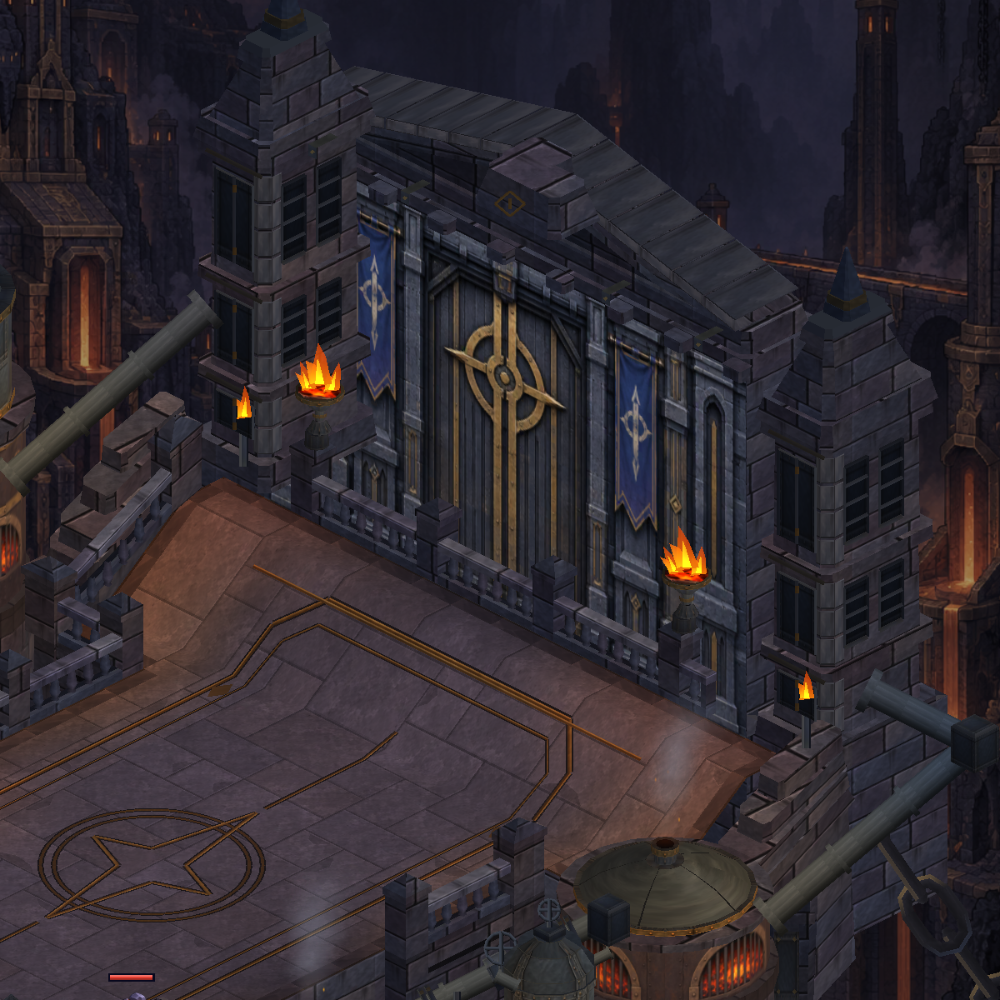
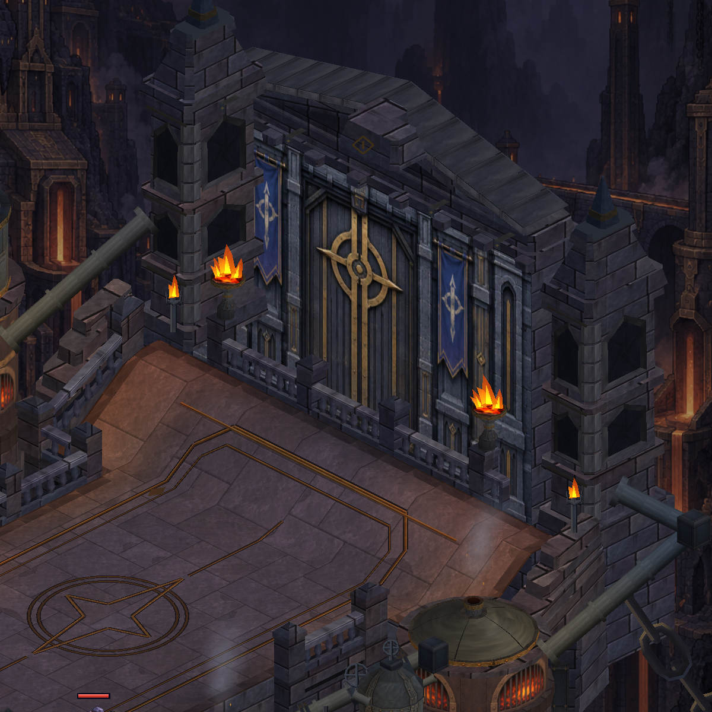
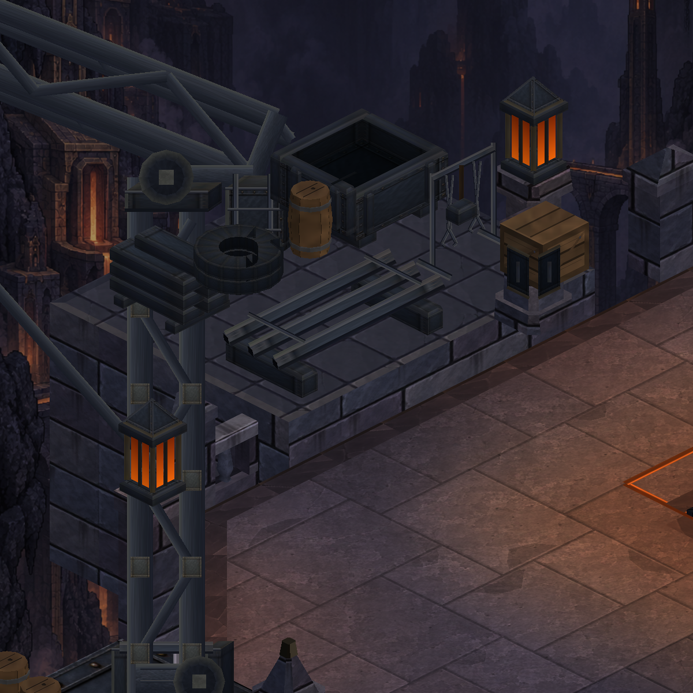
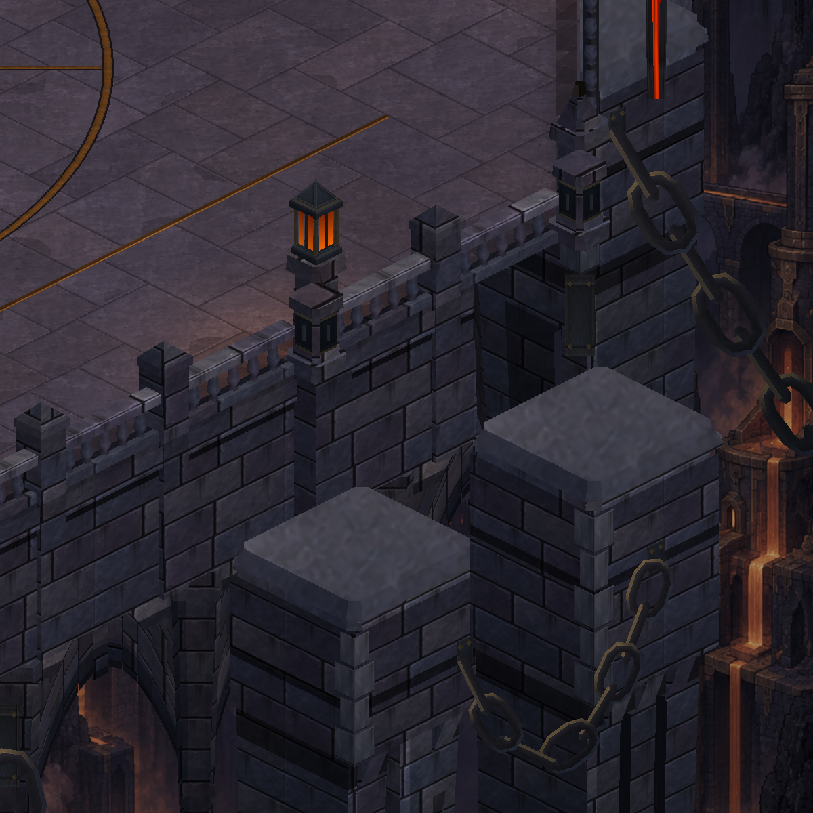
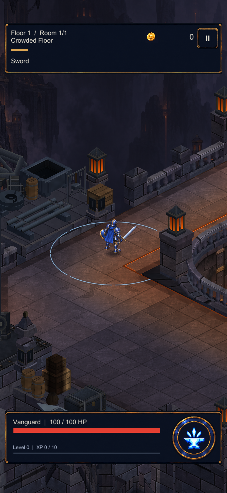
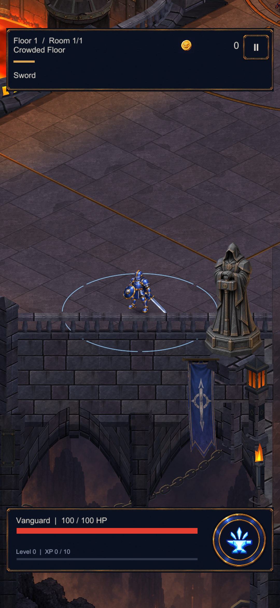

Kapı, atölye ve kemerler birlikte
Üç görsel iş tek pakette: daha geniş taş oyukları, yuvarlak boru stokları ve platform altındaki kemerlerin üzerinde bütünlüklü taş dolgu. Mevcut harita düzeni ve yürüyüş alanı korunuyor.
Kapı mimarisi

Önce
SonraAtölyede biçim ve malzeme ayrımı

Önce Sonra
SonraKemerlerin üstündeki taş yapı
 Önce
Önce
SonraHaritanın bütünü
Telefon kamerasında

Atölye yanında okunurluk
Kemerlerin yanında okunurlukBu görüntüler gerçek Unity çıktılarıdır; karakter konumları inceleme için sahnelendi. 395 .NET, 415 EditMode ve 150 PlayMode testi geçti; APK hazır. Telefonun uygunluğu doğrulanınca yükleme ve cihaz kontrolü yapılacak. Metal yüzeylerde daha zengin boyalı doku hâlâ açık bir çalışma alanı.
Tam harita · Kapsam ve doğrulama